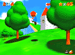

|

Review

Game Type: 3D Platform
Third-person perspective with a freely moving camera. Although it has
similarities to earlier Super Mario games, Mario can now punch, belly slide,
and grab ledges. Control is by means of an analog stick.
Mario moves in the direction pressed (X and Z axis) in relation to the
current camera angle at a speed corresponding to how hard the stick is
pressed. He can also jump, climb, etc. in the Y axis.
Gameplay: 90/100
In an era of games that are satisified with taking another game's
interface and introducing a new kind of weapon or objective, it's nice to
see a game that establishes its own genre. Indeed, the game companies have
been so busy borrowing from each other that I don't think I've seen a game
this original since the mid-80's, nor do I think I will again soon.
Although the game makes effective use of 3D, it's still plagued by the
playability problems 3D games tend to have. It's difficult to judge distance
in the Z axis, especially with the confusing scaling of the texture maps.
Precise jumps over chasms are difficult, and jumping on a Goomba's head,
while tricky in 2D, is near impossible in 3D. I rarely kill an enemy on the
first attempt.
Due to this the enemies are few and far between, and the emphasis is on
exploring the various stages. 6 stars are strewn about each of the 15 main
stages, forcing you to complete each several times, accomplishing a
different task or visiting a different area each time. Exploring can
actually be fairly fun in itself. Mario has a wide array of moves
available, some of which take a little skill to execute, and many areas
can't be reached without using all of them. I can't see much replay
value after one has explored every nook and cranny in the game, but there
sure are a lot of nooks and crannies to explore. One can beat the game
in 20-30 hours but to find all the stars would take much longer.
Graphics: 95/100
As the showcase game for the N64, Mario 64's graphics have fallen under
especially intense scrutiny. They are indeed more impressive than anything
seen at home so far, but not by as much as the public was led to expect.
"Evolutionary, not revolutionary", goes the phrase circulating Usenet.
The polygon count onscreen is roughly 50% more than on any Playstation or
Saturn game seen thus far. The game really shows off in a couple areas,
though.
First, the texture maps are very detailed, and when they scale up very
close the individual pixels melt together instead of forming gigantic
squares. When the camera is pointed right into a rock it looks more like
marble than a mosaic.
Second, the game uses an interesting technique for
making popup less noticable. The polygons used to draw a hill or wall are
considered more "important" to the game than, say, the polygons used to draw
a Goomba. So even if the Goomba is closer to the camera than a hill in the
distance, the hill will be drawn in instead. This allows the player to see
almost the entire landscape at once. Better to see an entire mountain you
haven't explored than to see a single enemy that's not even in your way.
Even with all these fancy effects the game maintains a very smooth
framerate. The colors are bright. Mario and the enemies are Gouraud shaded.
Not the most beautiful game I've ever seen but definitely the most
technically impressive, and definitely not an eyesore.
Sound: 90/100
Decent. The music is average, the sound effects of good quality (but
man, do I hate Mario's voice), and the little tricks like the echos in caves
are well done. Not awe-inspiring but pretty good.
Overall: 95/100
As I said earlier I'm a bit concerned about the replay value, but man,
what a ride the first time through. But this is an exploration game, one for
the Zelda 3 fans. If any other companies dare invest the time to develop
them, there will be clones of this game, so eventually it may be mentioned
in the same breath as the pioneering games of the early 80's. But it'll
never be as addictive or as replayable. So to Next Generation I have this to
say: the greatest game of all time? Grow a spine, wussies, you got caught
up in the hype like everyone else.
|